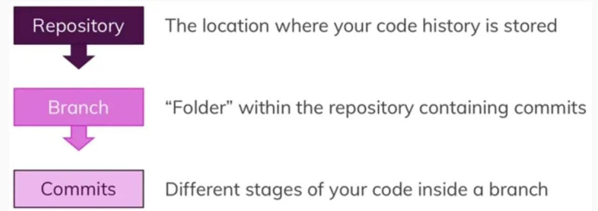

Need terminid võivad tekitada segadust, eriti algajatele. Git on versioonihaldussüsteem, mille saab oma arvutisse alla laadida, GitHub on hostimis- ja koostööpakkuja, mis majutab Giti projekte. See on veebipõhine lahendus, mis võimaldab teil Giti hoidlad sellesse üles laadida. Koodi Giti keskkonnast GitHubi üles laadides muudab selle kättesaadavaks kõigile teistele, kes soovivad projekti panustada.
Git töötab ainult terminalis (MacOS) või käsuviibas (Windows), seega pole sellel graafilist kasutajaliidest (GUI).
Hoidlad, filiaalid ja kohustused
Hoidla on koht, kus kood on salvestatud, seega kaust, mis sisaldab projekti koodi. Pärast selle kausta muutmist Giti hoidlaks, haldab Git projekti koodi versiooniajalugu.
Koodi ei salvestata siiski otse hoidlasse. Meie hoidlas on "alamkaustad" ehk nn filiaalid. Pärast esimese koodi lisamist oma hoidlasse luuakse vaikimisi põhiharu. Kuid me ei piirdu ühe haruga, vaid hoidla sisaldab tavaliselt mitut haru. Nii et need on hoidlad ja filiaalid, kuid kus on meie kood salvestatud? Meie filiaalides! Filiaal sisaldab meie koodi erinevaid versioone, meie kohustusi. Iga sissekanne on koodi konkreetse versiooni hetktõmmis.
Peamised käsud
git init
Kirjutame oma esimese Giti käsu. git initmuudab meie projekti Giti hallatavaks projektiks. Peaksite oma terminalis nägema Initsialiseeritud tühja Git Repository teavet, mis kinnitab, et Git jälgib nüüd projekti. Aga miks on meie projekt tühi?
git olek
git statusannab teavet hetkeseisu kohta. Meil on jälgimata faile, mis tähendab, et Git on teadlik, et failid asuvad meie kaustas, kuid me peame Gitil selgesõnaliselt käskima neid faile jälgida (st kontrollida, kas failid on muutunud) ja salvestada kõik muudatused uude Commitisse.
git add
Failide jälgimine kas töötab git add filename("failinimi" peaks olema selle faili nimi, mida soovite jälgida) või git add .jälgib kõigi hoidlas olevate failide muudatusi. git statusNäeme, et lisasime hoidlasse uue faili (meie puhul "index.html"), kuid siiani ei salvestanud me koodis muudatusi .
git commit
Viimase sammuna peame kinnistama või salvestama praeguse koodiversiooni meie hoidlasse. git commit -mlisab meie filiaalile koodi uusima versiooni, -mpeaks andma sisuka sissekandesõnumi. Meie puhul võiksime kasutada git commit -m "added starting code"
Kasulikud Giti käsud

GitHubiga alustamine
Kuidas saame oma kohalikust Giti hoidlast koodi üles laadida nn kaughoidlasse ja mida vajame alustamiseks? Kohalik hoidla ja konto veebilehel github.com – see on kõik!
GitHubiga alustamine